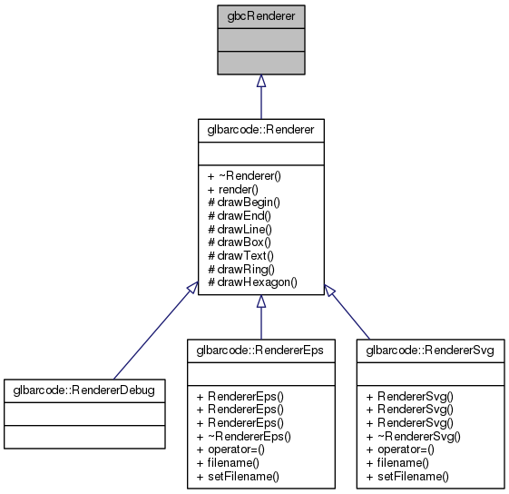

glbarcode++
All
Classes
Namespaces
Files
Functions
Variables
Typedefs
Macros
Pages
gbcRenderer Struct Reference
Inheritance diagram for gbcRenderer:

Detailed Description
Renderer base for CAPI
The documentation for this struct was generated from the following file:
/home/evins/GLBARCODE/glbarcode/glbarcode/
Renderer.h
gbcRenderer
Generated on Sat Jun 20 2015 20:44:51 for glbarcode++ by
1.8.6


 1.8.6
1.8.6